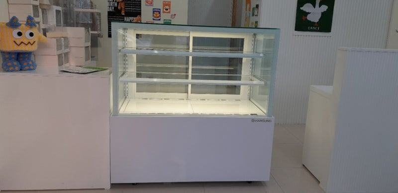
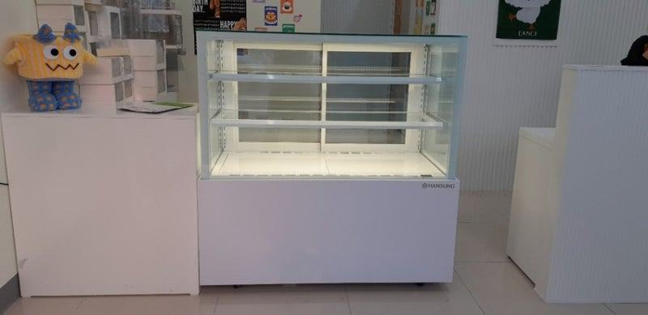
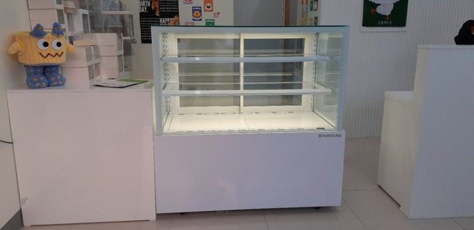
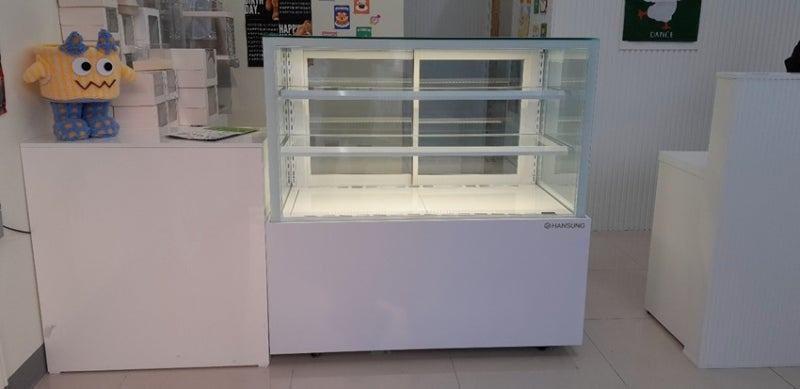
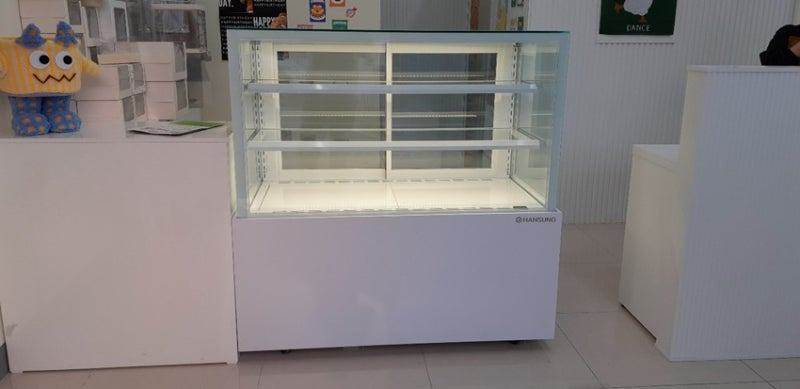
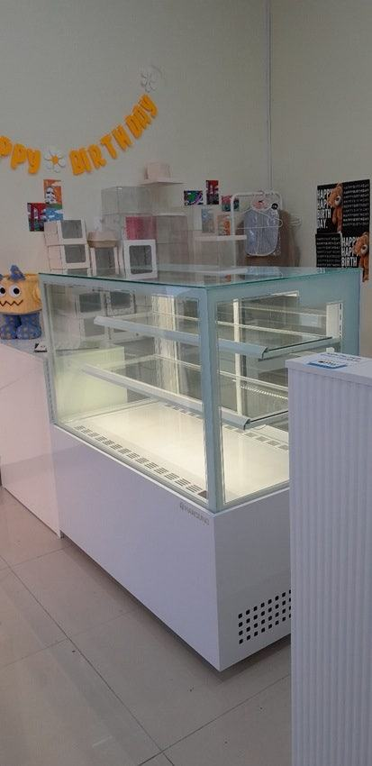
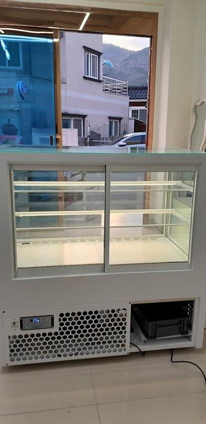
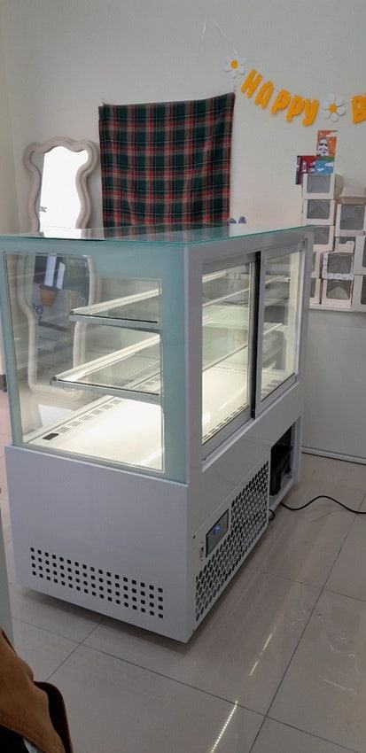

정육쇼케이스
정육쇼케이스 도어, 앞문·뒷문·슬라이딩 중 우리 매장에 맞는 것

직원이 손님 주문을 받아 고기를 꺼내 주는 대면 정육점은 뒷문형, 손님이 포장육을 직접 집어 가는 무인·셀프 매장은 앞문형이 기본입니다. 작업 공간이 좁다면 여닫이 대신 슬라이딩 도어를 고르고, 어느 쪽이든 문 밀폐와 결로 방지 유리를 함께 챙기셔야 고기 색과 신선도가 지켜집니다.
안녕하세요. 정육점과 식육식당에 들어가는 고기 진열장을 직접 설계하는 한성쇼케이스입니다.
정육쇼케이스 견적을 받다 보면 크기와 조명은 금방 정해지는데, 문 이야기에서 사장님들이 한참 고민하십니다.
"앞으로 여는 게 나을까요, 뒤로 여는 게 나을까요? 슬라이딩은 어떤가요?"
문은 한번 정하면 바꾸기 어려운 부분입니다. 그리고 고기는 문이 열릴 때마다 들어오는 바깥 공기와 습기에 예민해서, 문 구조가 곧 고기 상태와 직원 동선을 좌우합니다.
오늘은 판매 방식별로 어떤 도어가 맞는지, 그리고 문을 고를 때 함께 봐야 할 결로와 위생 포인트를 정리해 드리겠습니다.
1. 대면 판매라면 뒷문형
손님이 부위를 고르면 사장님이 꺼내 썰고 무게를 다는 전통적인 정육점은 뒷문형이 맞습니다. 손님 쪽 유리는 고정돼 있어 지문이나 손자국이 덜 생기고, 고기를 꺼내는 손길이 손님 시야에서 벗어나 위생적으로 보입니다.
뒷문형은 작업대와 저울, 포장대 사이 동선이 짧아야 효과가 납니다. 쇼케이스 뒤쪽 통로 폭이 넉넉한지, 문을 연 상태에서 사람이 지나갈 수 있는지 미리 재 두세요.
뒷문을 여닫이로 할지 슬라이딩으로 할지도 이 통로 폭에 따라 정해집니다. 바쁜 저녁 시간에 직원 두 명이 함께 움직이는 매장이라면 문이 통로로 튀어나오지 않는 쪽이 부딪힘을 줄여 줍니다.
- 뒤쪽 통로에서 문을 열고 지나갈 수 있는지
- 저울·포장대까지 몇 걸음인지
- 손님 쪽 유리 높이가 고기를 고르기 편한지
2. 셀프·무인 매장이라면 앞문형
요즘 늘고 있는 무인 정육점이나 포장육 위주 매장은 손님이 직접 문을 열고 상품을 꺼내야 하므로 앞문형이 기본입니다.
손님이 쉽게 열고, 손을 떼면 스스로 잘 닫히는 구조인지가 핵심입니다.
사람이 상주하지 않는 매장은 누군가 문을 덜 닫고 가도 바로 알아채기 어렵습니다. 문이 살짝 열린 채로 몇 시간이 지나면 내부 온도가 올라 고기 색이 변하기 쉬우니, 닫힘이 확실한 경첩과 패킹을 고르시는 게 중요합니다.
손님 손이 닿는 면이라 손잡이 디자인과 유리 마감도 신경 써야 합니다.


3. 좁은 작업 공간엔 슬라이딩
여닫이 문은 열리는 반경만큼 공간이 필요합니다. 쇼케이스 뒤 통로가 좁은 매장이라면 옆으로 미는 슬라이딩 도어가 동선을 덜 막습니다.
슬라이딩은 문짝끼리 겹치는 부분과 레일의 밀폐력이 결로 관리를 좌우합니다. 레일에 고기 부스러기나 핏물이 끼면 문이 뻑뻑해지고 틈이 생기니, 청소가 쉬운 레일 구조인지 확인해 보세요.
문짝 수는 쇼케이스 길이에 맞춰 나누는데, 한 짝이 너무 길면 무거워 여닫기가 불편하고 너무 잘게 나누면 프레임이 시야를 가립니다.
주로 꺼내는 부위가 어디에 놓일지 생각해 나누는 위치를 정해 보세요.
- 레일을 분리해 닦을 수 있는지
- 문짝 겹침부의 패킹 상태
4. 문을 고를 때 같이 볼 결로와 위생
정육 매장은 작업대 물청소가 잦아 습도가 높은 편입니다. 문을 열고 닫을 때마다 유리에 김이 서리면 손님이 고기 색을 제대로 볼 수 없으니, 결로 방지 열선 유리를 함께 넣는 경우가 많습니다.
문 안쪽 모서리와 패킹 틈은 핏물이 고이기 쉬운 곳입니다. 패킹을 손으로 뺐다 끼울 수 있는지, 모서리가 둥글게 마감돼 닦기 쉬운지도 문 선택 기준에 넣어 두세요.
체크리스트
- 대면 판매인지 셀프·무인 판매인지
- 쇼케이스 뒤 통로 폭
- 여닫이·슬라이딩 중 열리는 공간
- 결로 방지 열선 유리 포함 여부
- 패킹·레일 청소 편의성
현장에서 자주 보는 경우: 문을 마감 옵션으로만 고를 때
상담 현장에서는 문을 디자인 마감 정도로 생각하고 고르셨다가, 쓰면서 습기가 차거나 동선이 꼬여 다시 문의하시는 경우를 자주 봅니다.
특히 여름철이나 환기가 잘 안 되는 매장에서는 문을 자주 여닫을수록 결로가 생기고, 이는 전기 사용과 위생 모두에 영향을 줍니다.
원문에서도 도어는 온도 손실, 결로 방지, 잦은 개폐에 따른 내구성까지 고려해야 하는 설계 요소라고 짚었습니다.
앞문은 손님이 직접 고르는 매장에, 뒷문은 직원이 손님 동선을 방해하지 않고 빠르게 채워 넣어야 하는 매장에, 슬라이딩은 공간이 좁은 매장에 맞는다는 기준은 정육쇼케이스에도 그대로 적용됩니다.










자주 묻는 질문
앞문과 뒷문을 둘 다 달 수 있나요?
가능합니다. 낮에는 직원이 뒤에서 응대하고, 일부 포장육은 손님이 앞에서 꺼내 가는 매장이라면 양쪽 문을 모두 두는 구성도 검토해 볼 만합니다.
무인 매장인데 문이 덜 닫히는 게 걱정입니다.
손을 떼면 스스로 닫히는 경첩 구조와 밀착력 좋은 패킹을 고르시는 것이 우선입니다. 문 앞에 닫아 달라는 안내를 붙여 두는 것도 도움이 됩니다.
평대형 정육쇼케이스도 문을 바꿀 수 있나요?
평대형은 대개 손님 쪽 유리를 고정하고 작업자 쪽에 슬라이딩이나 여닫이 문을 답니다. 작업 공간 폭에 맞춰 어느 쪽을 쓸지 정하시면 됩니다.
매장 조건에 맞춰 만드는 한성쇼케이스
원하시는 제품 사진과 설치할 공간 사진만 보내 주셔도 매장에 맞는 구성을 추천해 드립니다.
- 전국 240여 개 A/S 전담 센터 운영
- 본사 대량 자재 매입으로 품질 대비 합리적인 가격
- 유럽제·삼성 냉각 콤프레셔 적용
- 국내 최초 쇼케이스 전문 디자이너 상주
매장 폭과 원하는 진열 구성을 알려 주세요. 실측과 견적을 안내해 드립니다.
031-986-2458